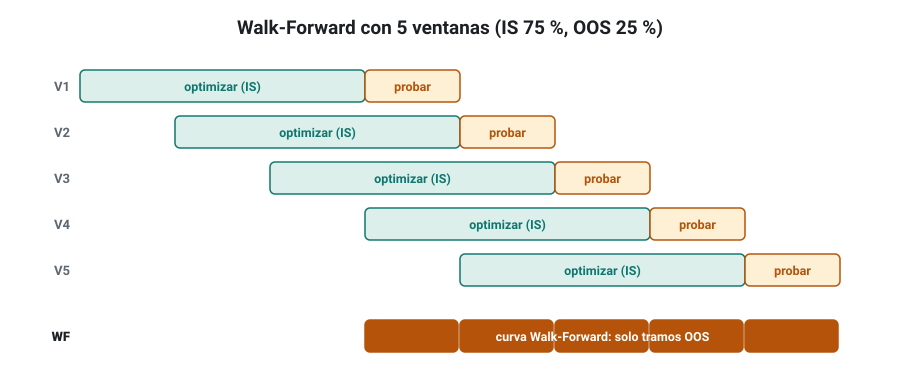
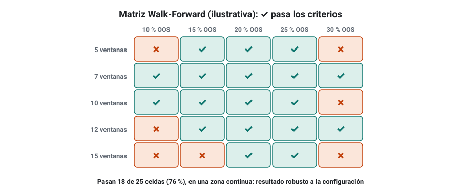
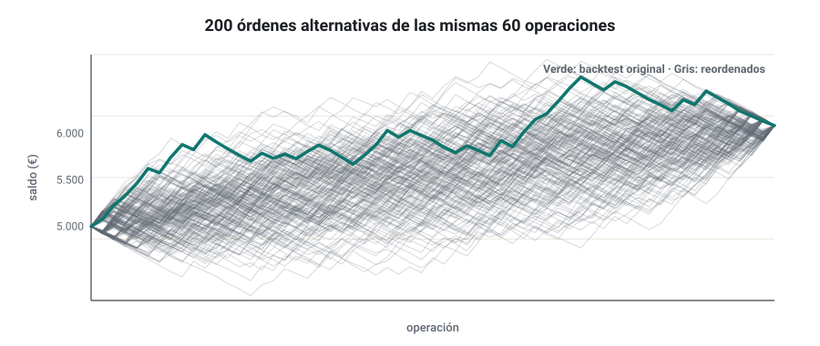
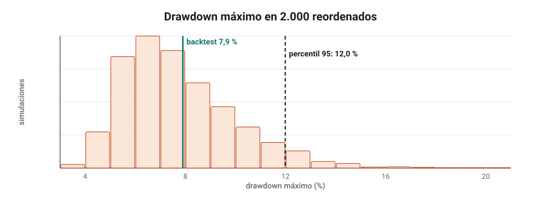
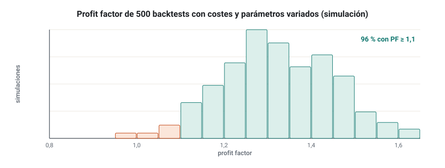
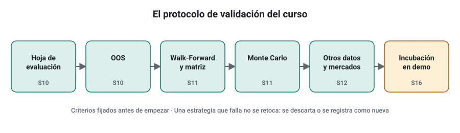

SEMANA 11 · ETAPA 3 · INVESTIGACIÓN Y VALIDACIÓN
Fuera de muestra, Walk-Forward y Monte Carlo
Presentación de la semana
Las candidatas que superaron tu hoja de evaluación tienen ahora que pasar dos pruebas mucho más duras. El Walk-Forward comprueba si el proceso de optimizar la estrategia funciona cuando se repite muchas veces sobre datos que no ha visto. El Monte Carlo comprueba qué habría pasado si la historia hubiera sido un poco distinta: otro orden de operaciones, otros costes, otros parámetros. Al final de la semana sabrás qué te dice cada prueba, qué no te dice y habrás validado tres candidatas.
Objetivos
Al terminar la semana sabrás:
- Explicar y configurar un Walk-Forward y una matriz Walk-Forward.
- Interpretar la eficiencia Walk-Forward y la estabilidad de la matriz.
- Hacer un Monte Carlo de operaciones y leer sus percentiles.
- Hacer un Monte Carlo con nuevos backtests variando costes, parámetros y datos.
- Conocer los límites de cada prueba y combinarlas en un protocolo.
- Validar tres candidatas con un protocolo documentado.
Plan de la semana (22–25 horas)
| Bloque | Horas | Qué harás |
|---|---|---|
| Clases | 5 | Cinco lecciones: lectura y vídeos |
| Prácticas | 13 | Walk-Forward, matriz y Monte Carlo de tres candidatas |
| Investigación y evaluación | 4 | Investigación I-11, entrega y examen |
| Revisión y planificación | 2 | Glosario, cuaderno y plan de la semana 12 |
Qué necesitas
- SQX Professional o Ultimate: el Optimizer con Walk-Forward y las pruebas de robustez avanzadas no están en la edición Starter (semana 5). Si tienes la Starter, la lección 2 incluye cómo hacer un Monte Carlo de operaciones en la hoja de cálculo.
- Las candidatas que superaron tu hoja de evaluación en la semana 10. Si tienes menos de tres, usa las tres mejor clasificadas aunque no pasaran todo, y anótalo.
- Tu plantilla de métricas.
Criterio para desbloquear la semana 12
Tener en estado APROBADO, con un 80 % o más cada uno:
- ☐ Examen de la semana 11
- ☐ Entrega práctica: informe de validación de tres candidatas
- ☐ Investigación I-11: los ocho pasos documentados
Walk-Forward y matriz Walk-Forward
Formato: clase de 45 minutos · Lectura: 40 minutos
La idea
En la semana 10 usaste un único periodo fuera de muestra. El Walk-Forward (WF) repite esa idea muchas veces seguidas, imitando lo que harías en real: optimizar la estrategia con los datos pasados, operarla un tiempo con esos parámetros, volver a optimizar con los datos más recientes, operar otro tiempo, y así sucesivamente.

- Se divide la historia en ventanas. Cada ventana tiene una parte de optimización (IS) y una parte de prueba (OOS) inmediatamente posterior.
- En cada ventana, el Optimizer busca los mejores parámetros en la parte IS.
- Con esos parámetros, la estrategia opera la parte OOS.
- La ventana avanza y se repite.
- Se unen todos los tramos OOS: esa curva Walk-Forward es una simulación mucho más realista de cómo se comportaría la estrategia si la reoptimizaras periódicamente.
Qué se valida
El Walk-Forward no valida unos parámetros concretos: valida el proceso de optimizar. Si al reoptimizar periódicamente la estrategia sigue ganando fuera de muestra, su lógica se adapta al mercado. Si solo gana con los parámetros del backtest original, era un ajuste a esos datos.
Eficiencia Walk-Forward
La eficiencia Walk-Forward (WFE) compara el rendimiento fuera de muestra con el que se obtuvo en la optimización, ambos anualizados:
Como orientación, una WFE por encima del 50–60 % se considera aceptable. Una WFE muy baja indica que gran parte del rendimiento IS era sobreajuste.
La matriz Walk-Forward
El resultado de un WF depende de dos elecciones: cuántas ventanas (runs) y qué porcentaje de cada ventana es OOS. Si cambiando estas elecciones el resultado se derrumba, la conclusión no es fiable. La matriz Walk-Forward repite el WF con muchas combinaciones (por ejemplo, de 5 a 15 ventanas y del 10 % al 30 % OOS) y muestra cuáles pasan tus criterios.

Qué parámetros optimizar
En el Walk-Forward solo deben optimizarse unos pocos parámetros (2 o 3) con rangos razonables. Optimizar todos los parámetros con rangos amplios convierte el WF en otra máquina de sobreajuste.
Comprueba que lo has entendido
- ¿Qué valida el Walk-Forward: unos parámetros o un proceso?
- Una estrategia tiene una rentabilidad anual IS del 18 % y OOS del 7 %. ¿Cuál es su WFE? ¿Es aceptable?
- ¿Por qué no se debe elegir la mejor celda de la matriz?
Monte Carlo de operaciones
Formato: clase de 40 minutos · Lectura: 35 minutos
La idea
Tu backtest es una secuencia de operaciones. Si la historia se hubiera desarrollado de otra forma, el orden de esas operaciones —y alguna de ellas— habría sido distinto. El Monte Carlo de operaciones genera miles de secuencias alternativas a partir de las operaciones del backtest y mide cómo se reparten los resultados.
Tres variantes
| Variante | Qué hace | Qué mide |
|---|---|---|
| Reordenar (shuffle) | Cambia el orden de las mismas operaciones | El drawdown: el beneficio final no cambia |
| Remuestrear (resampling) | Elige operaciones al azar con reemplazo | Drawdown y beneficio: algunas operaciones se repiten y otras faltan |
| Saltar operaciones (skip trades) | Elimina un porcentaje de operaciones al azar | Dependencia de operaciones concretas (por ejemplo, si fallara la conexión) |

Los percentiles
El resultado no es un número, sino una distribución. Se lee con percentiles: el percentil 95 del drawdown es el valor que solo se supera en el 5 % de las simulaciones.

Para qué lo usarás
- Dimensionar el riesgo: usa el drawdown del percentil 95, no el del backtest, para decidir el riesgo por operación (semana 4).
- Fijar el criterio de desactivación: si en real la estrategia supera el drawdown del percentil 95 o 99, algo ha cambiado (semana 16).
- Comparar estrategias: dos estrategias con el mismo drawdown de backtest pueden tener distribuciones muy distintas.
Sin SQX Professional
Puedes hacer un reordenado en la hoja de cálculo: copia la columna de resultados, añade una columna con =ALEATORIO(), ordena por ella, calcula el drawdown y repite (o usa una macro sencilla). Con 100 repeticiones ya verás la distribución.
Comprueba que lo has entendido
- ¿Por qué el reordenado no cambia el beneficio final?
- ¿Qué significa que el percentil 95 del drawdown sea del 15 %?
- ¿Qué drawdown usarías para dimensionar el riesgo: el del backtest o el del percentil 95? ¿Por qué?
Monte Carlo con nuevos backtests
Formato: clase de 35 minutos · Lectura: 30 minutos
Más allá de las operaciones
El Monte Carlo de operaciones supone que las operaciones serían las mismas. Pero si los costes, los datos o los parámetros fueran un poco distintos, la estrategia haría otras operaciones. El Monte Carlo con nuevos backtests repite el backtest completo cientos de veces cambiando algo en cada uno.
Qué se puede variar
- Costes: spread y deslizamiento aleatorios dentro de un rango (por ejemplo, entre el 100 % y el 200 % del configurado).
- Parámetros: cada parámetro cambia un poco al azar (por ejemplo, ±10–20 %).
- Datos: se añade un pequeño ruido a los precios históricos, o se cambia la hora de inicio de las velas.
- Ejecución: se retrasa la entrada una vela o se rechaza un porcentaje de órdenes.

Cómo leerlo
Mira el porcentaje de simulaciones que siguen cumpliendo tus criterios (por ejemplo, profit factor > 1,1) y el percentil 5 del resultado. Una estrategia cuyo resultado se derrumba con cambios pequeños depende de detalles que no se repetirán.
Comprueba que lo has entendido
- ¿Qué diferencia hay entre el Monte Carlo de operaciones y el de nuevos backtests?
- ¿Por qué añadir ruido a los datos es una prueba útil?
- ¿Qué dos números mirarías del resultado?
Límites de cada prueba
Formato: clase de 30 minutos · Lectura: 25 minutos
Ninguna prueba es suficiente
| Prueba | Qué detecta | Qué no detecta |
|---|---|---|
| OOS simple | Sobreajuste grosero | Suerte en un único periodo; OOS contaminado |
| Walk-Forward | Si el proceso de optimización generaliza | El sesgo de selección previo (si elegiste la estrategia entre miles) |
| Matriz WF | Dependencia de la configuración del WF | Cambios futuros de régimen |
| Monte Carlo de operaciones | Riesgo de drawdown por el orden | Si las operaciones mismas eran suerte |
| Monte Carlo de backtests | Fragilidad ante costes, parámetros y datos | Una lógica sin ventaja pero estable |
| Otros mercados (semana 12) | Lógica demasiado específica | Ventajas reales pero propias de un solo mercado |
El protocolo
Por eso se combinan en un protocolo: una secuencia fija de pruebas con criterios definidos antes de empezar. Cada prueba elimina un tipo de falso positivo. Al final, las estrategias que pasan todo no tienen garantía de funcionar, pero sí muchas más probabilidades que las que no.

Comprueba que lo has entendido
- ¿Qué no detecta el Walk-Forward?
- ¿Por qué se fijan los criterios antes de empezar?
- ¿Qué pasa si modificas una estrategia para que pase una prueba?
Taller: validación de tres candidatas
Formato: taller guiado de 60 minutos · Práctica: 8–10 horas
Paso 1 · Fija el protocolo
Escribe en tu cuaderno, antes de probar nada, los criterios de cada prueba. Propuesta de partida:
| Prueba | Configuración | Criterio |
|---|---|---|
| Walk-Forward | 10 ventanas, 20 % OOS, 2–3 parámetros optimizados | Curva WF con profit factor ≥ 1,15 y WFE ≥ 50 % |
| Matriz WF | 5–15 ventanas, 10–30 % OOS | Al menos el 60 % de las celdas pasan, en zona continua |
| Monte Carlo de operaciones | 1.000 simulaciones, remuestreo | Beneficio en el percentil 5 > 0; drawdown del percentil 95 aceptable |
| Monte Carlo de backtests | 200 simulaciones; costes 100–200 %, parámetros ±15 % | ≥ 80 % de simulaciones con PF ≥ 1,1 |
Paso 2 · Walk-Forward y matriz
En el Optimizer de SQX, configura el Walk-Forward de cada candidata y después la matriz. Guarda capturas de la curva WF y de la matriz.
Paso 3 · Monte Carlo
Configura las pruebas de robustez de Monte Carlo en el Retester (operaciones y backtests). Anota los percentiles.
Paso 4 · Veredicto
Para cada candidata: aceptada, rechazada (en qué prueba) o en duda (qué falta). Una estrategia rechazada no se modifica para que pase.
Comprueba que lo has entendido
- ¿Cuántas de tus tres candidatas superaron todo el protocolo?
- ¿Qué prueba fue la más exigente?
- ¿Cuál es el drawdown del percentil 95 de tu mejor candidata, y con qué riesgo por operación la operarías?
Glosario de la semana
| Término | Inglés | Definición |
|---|---|---|
| Curva Walk-Forward | Walk-Forward equity | Unión de los tramos fuera de muestra de un Walk-Forward |
| Eficiencia Walk-Forward | Walk-Forward efficiency (WFE) | Rentabilidad anualizada OOS dividida entre la IS |
| Matriz Walk-Forward | Walk-Forward matrix | Conjunto de Walk-Forward con distintas ventanas y porcentajes OOS |
| Monte Carlo | Monte Carlo simulation | Repetición de una prueba muchas veces con variaciones aleatorias |
| Percentil | Percentile | Valor por debajo del cual queda un porcentaje dado de los resultados |
| Protocolo de validación | Validation protocol | Secuencia fija de pruebas con criterios definidos de antemano |
| Remuestreo | Resampling | Elección aleatoria de operaciones con reemplazo |
| Reordenado | Shuffle | Cambio aleatorio del orden de las operaciones |
| Ventana | Run / window | Cada tramo de optimización y prueba de un Walk-Forward |
Ejercicios obligatorios
E1 · Ventanas. Con datos de 2014 a 2025 (12 años), 6 ventanas y un 25 % OOS, calcula aproximadamente la duración de la parte IS y la OOS de cada ventana en un Walk-Forward anclado al final (sugerencia: la parte OOS total cubre las últimas 6 partes OOS consecutivas).
E2 · WFE. Calcula la WFE de: a) IS 22 % anual, OOS 13 %; b) IS 30 %, OOS 6 %; c) IS 12 %, OOS 10 %. ¿Cuáles aceptarías?
E3 · Matriz. Una matriz de 3 × 3 (5, 10 y 15 ventanas; 10 %, 20 % y 30 % OOS) tiene estos resultados (✓ pasa, ✗ no pasa): fila 5: ✓ ✗ ✗; fila 10: ✗ ✓ ✗; fila 15: ✗ ✗ ✓. ¿Es robusta? ¿Por qué?
E4 · Reordenado. Toma las 60 operaciones del taller de la semana 4 y haz 20 reordenados en la hoja. Anota el drawdown máximo de cada uno y calcula la mediana y el máximo.
E5 · Percentiles. De 1.000 simulaciones, 940 tienen un drawdown menor que el 14 % y 990, menor que el 19 %. ¿Cuáles son los percentiles 94 y 99?
E6 · Riesgo con Monte Carlo. Tu estrategia tiene, con un 1 % de riesgo, un drawdown del percentil 95 del 18 %. No quieres superar un 12 % en ese percentil. ¿Qué riesgo por operación usarías, suponiendo que el drawdown es aproximadamente proporcional al riesgo?
E7 · Monte Carlo de backtests. De 200 simulaciones, 148 tienen PF ≥ 1,1. ¿Pasa el criterio del 80 %? ¿Qué podrías mirar para entender los fallos?
E8 · Límites. Una estrategia elegida entre 300.000 supera el Walk-Forward. Explica qué riesgo sigue sin cubrir esa prueba.
E9 · Modificar o no. Una candidata falla el Monte Carlo de costes. Un compañero propone ampliar su take profit para que pase. ¿Qué le dices?
E10 · Protocolo propio. Escribe tu protocolo de validación definitivo con todas las pruebas de las semanas 10 y 11, en orden, con sus criterios.
Investigación I-11 y entrega práctica
Investigación I-11 · ¿Cuánto mayor es el drawdown real que el del backtest?
Paso 1 · Hipótesis. Ejemplo: «En mis candidatas, el drawdown del percentil 95 del Monte Carlo de remuestreo es al menos 1,5 veces el drawdown del backtest».
Paso 2 · Fuentes. Cita al menos una fuente sobre Monte Carlo aplicado a estrategias de trading.
Paso 3 · Datos. Las operaciones de tus candidatas (IS y OOS) y, si quieres, las de la semana 4.
Paso 4 · Diseño. Número de simulaciones, tipo de Monte Carlo, percentiles y cómo calcularás el cociente.
Paso 5 · Generación. No generas nada: usas las candidatas.
Paso 6 · Validación. Ejecuta el Monte Carlo de cada candidata.
Paso 7 · Comparación. Tabla con el drawdown del backtest, la mediana, el percentil 95 y el 99, y el cociente percentil 95 / backtest.
Paso 8 · Conclusiones. ¿Se confirma? ¿Qué factor multiplicarías al drawdown del backtest para planificar tu riesgo?
Entrega práctica · Informe de validación
Qué entregar
| Archivo | Contenido |
|---|---|
CODIGO_S11_ENT |
Informe de validación de tres candidatas: protocolo fijado de antemano (con fecha), resultados de cada prueba con capturas, veredicto y riesgo por operación propuesto para las aceptadas |
CODIGO_S11_SQX |
Candidatas aceptadas exportadas desde SQX |
CODIGO_S11_INV |
Investigación I-11 |
| Ejercicios | E1 a E10 |
Cómo se evaluará
Se valora que el protocolo esté fijado antes de las pruebas, que los resultados se presenten completos (también los fallos) y que el veredicto sea coherente. Modificar una candidata para que pase una prueba sin declararlo es motivo de SUSPENSO.
Examen de la semana 11 · Variante A
Tiempo orientativo: 60 minutos · Puntuación: 100 puntos · Aprobado: 80 puntos · Puedes usar calculadora, pero no el material del curso ni el tutor de IA. Si suspendes, repetirás con otra variante.
Parte A · Opción múltiple (30 puntos, 2 por pregunta)
Parte B · Cálculo (45 puntos, 15 por ejercicio)
B1. Un Walk-Forward de 8 ventanas da estos profit factor OOS: 1,32; 0,94; 1,21; 1,45; 1,08; 0,88; 1,26; 1,19. a) ¿En cuántas ventanas gana la estrategia? b) Calcula la media y la mediana. c) La rentabilidad anualizada OOS es del 9 % y la IS del 16 %: calcula la WFE. ¿Aceptarías la estrategia con los criterios del taller?
B2. Un Monte Carlo de 1.000 remuestreos da: drawdown del backtest 11 %, mediana 12 %, percentil 95 del 19 %, percentil 99 del 24 %, beneficio en el percentil 5 de +3 %. a) Calcula el cociente percentil 95 / backtest. b) ¿Cumple el criterio de beneficio del taller? c) Con un 1 % de riesgo, ¿qué riesgo usarías para que el percentil 95 no supere el 12 %?
B3. En una matriz Walk-Forward de 4 × 4 = 16 celdas, pasan 11, todas juntas salvo 2 sueltas en una esquina. a) ¿Qué porcentaje pasa? b) ¿Cumple el criterio del taller? c) ¿Cómo interpretas las 2 celdas sueltas?
Parte C · Razonamiento (25 puntos)
En un máximo de 250 palabras: explica por qué ninguna prueba de esta semana basta por sí sola y cómo las combinarías para decidir si una estrategia pasa a la incubación en demo.